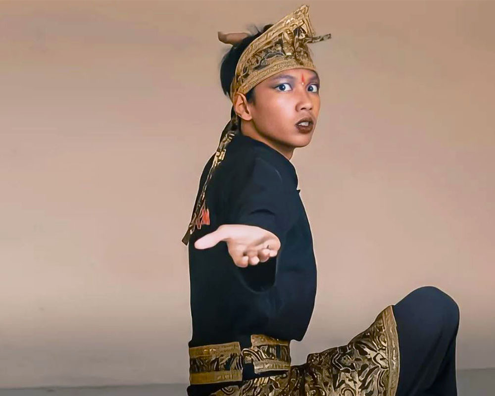

Desa Wisata Cimande di Kabupaten Bogor menawarkan perpaduan keindahan alam dan kekayaan budaya tradisional. Terletak di kaki Gunung Salak dan Gede Pangrango, desa ini menjadi pusat aliran pencak silat tertua di Jawa Barat serta tradisi pengobatan patah tulang yang melegenda. Wisatawan juga dapat menikmati persawahan, kebun salak, serta panorama pegunungan yang menenangkan.
TELUSURIDescription